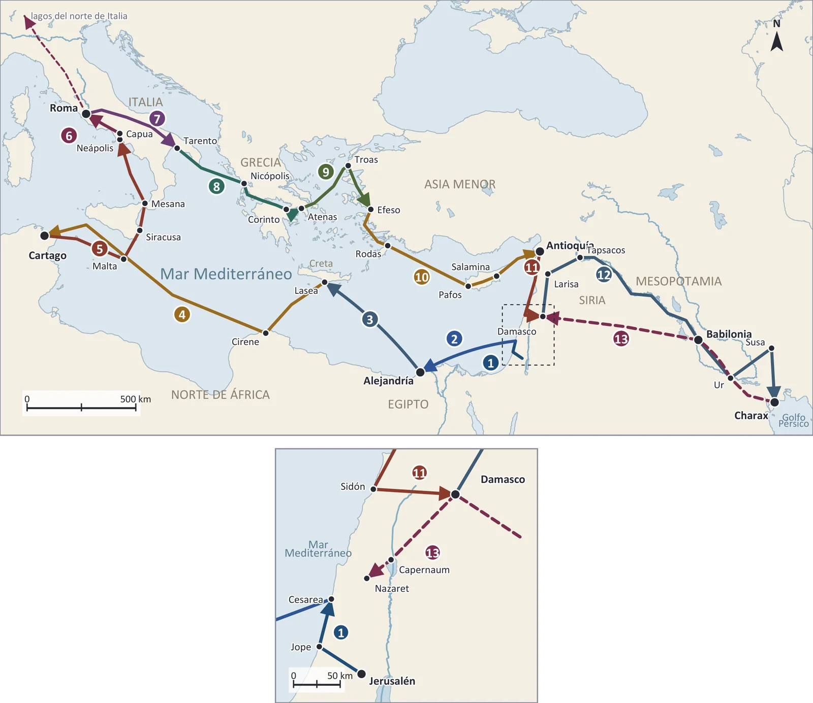
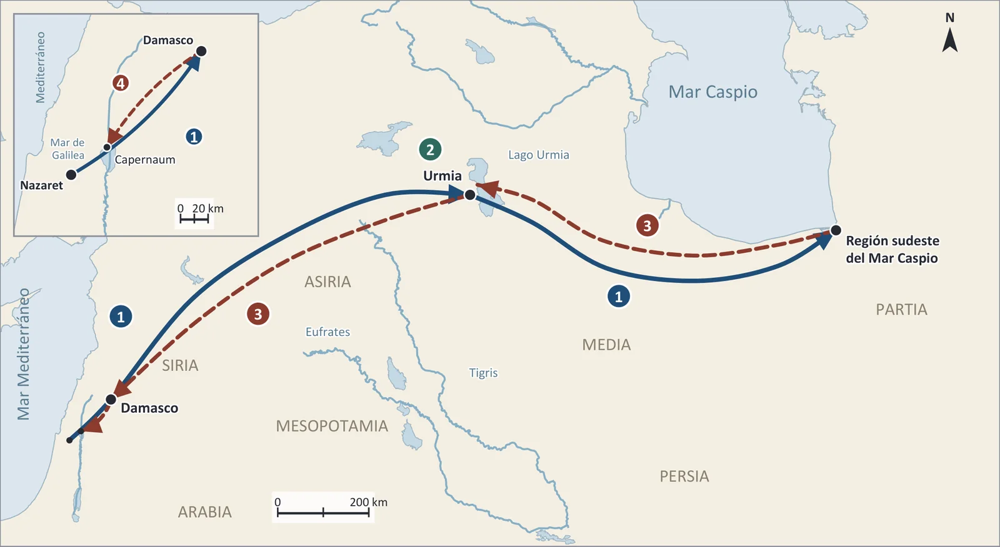
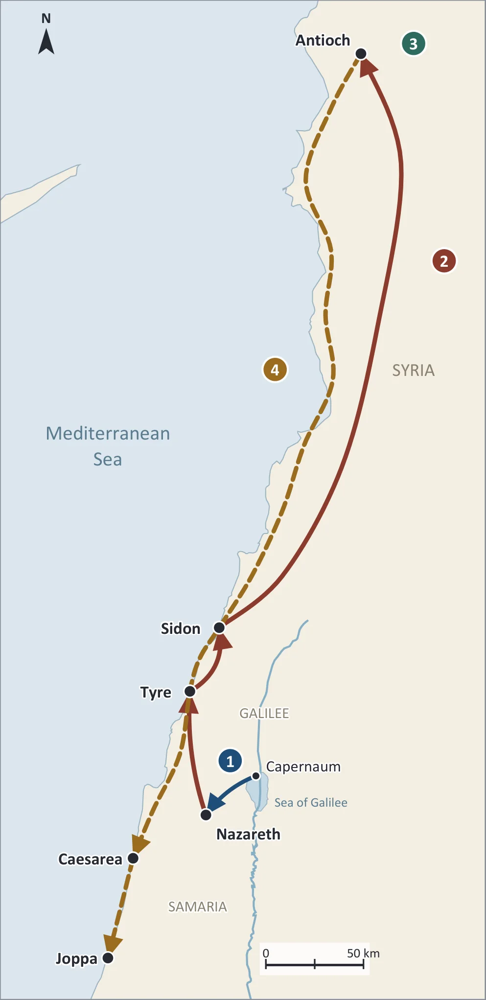
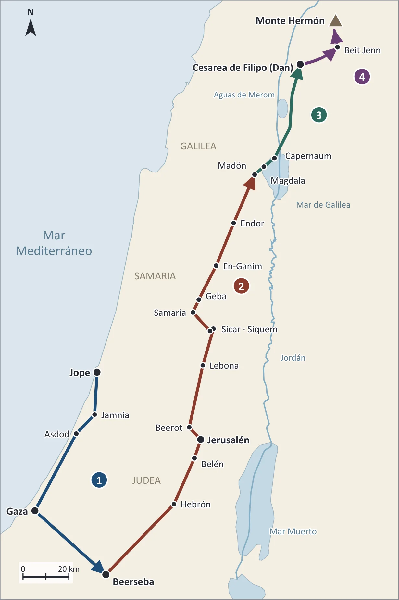
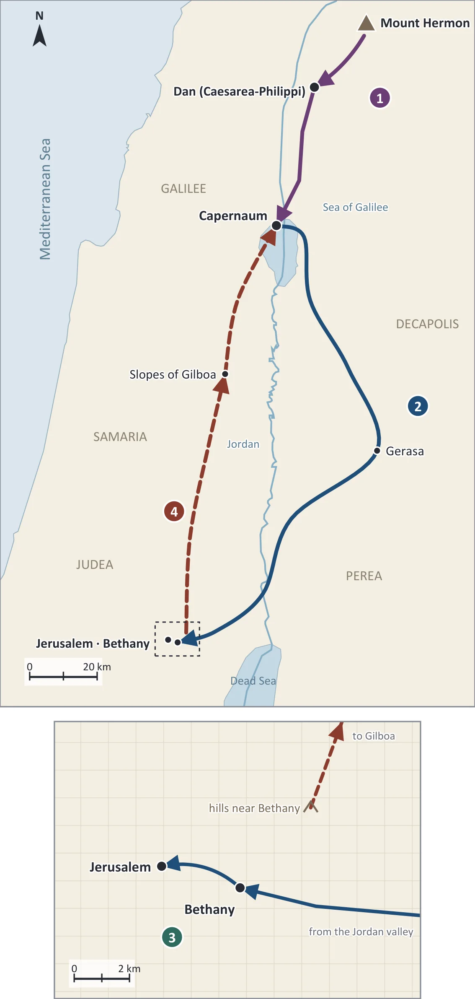

Parte II Primeros viajes y enseñanzas
Documentos 130–134
Documento 130En el Camino a Romaabril de 22 d. de J.C.
| Acontecimiento | El libro de Urantia | Biblia |
|---|---|---|
| Mapa 13El viaje a Roma, Grecia y Mesopotamiaabril de 22 d. de J.C. – diciembre de 23 d. de J.C. | ||
| El comienzo de la gira de dos años a RomaMapa 13-① De Jerusalén a Cesarea por JopeMapa 13-⑧ Por Nicópolis y Corinto a AtenasMapa 13-⑨ Por Troas a EfesoMapa 13-⑫ En caravana a Mesopotamia | 130:0.1–7 | Ninguno |
| El 26 de abril del año 22 d. de J.C., Jesús salió de Jerusalén con Gonod y su hijo Ganid, de la India, y viajó por Jope, Cesarea, Alejandría, Cartago, Roma, Corinto, Efeso y muchos otros lugares, hasta que se separó de ellos en Charax el 10 de diciembre del año 23 d. de J.C. Jesús enseñaba a Ganid y servía de intérprete a Gonod. | ||
| 1. En Jope — Discurso Sobre Jonás | 130:1.1–6 | Ninguno |
| En Jope Jesús conoció a Gadía, un intérprete filisteo que trabajaba para Simón, un curtidor. Cuando Gadía le preguntó por Jonás y el gran pez, Jesús respondió advirtiéndole contra la tentación de huir del deber. Sobre el bien y el mal enseñó que Dios no crea el mal; el mal resulta de una elección inmadura. | ||
| 2. En Cesarea | 130:2.1–10 | Ninguno |
| Mientras se reemplazaba un timón roto, Jesús se quedó en Cesarea, conversando con un comerciante de Mongolia e instando a un joven griego, Anaxando, a vencer con bondad a su capataz injusto. Explicó a Ganid la diferencia entre la voluntad de Dios y la voluntad del hombre, y que un perro no tiene naturaleza espiritual. | ||
| 3. En AlejandríaMapa 13-② A Alejandría | 130:3.1–10 | Ninguno |
| En Alejandría Jesús y Ganid vieron el faro de Faros y pasaban tiempo cada día en la biblioteca y el museo más grandes del mundo. Bajo la dirección de Jesús, Ganid comenzó a reunir las enseñanzas de las religiones del mundo que reconocían una Deidad Universal. No conocieron a Filón, que estaba enfermo. | ||
| 4. El Discurso Sobre la RealidadMapa 13-③ A Lasea, en Creta | 130:4.1–15 | Ninguno |
| La noche antes de dejar Alejandría, tras encontrarse con un profesor que daba conferencias sobre Platón, Jesús explicó a Ganid la naturaleza de la realidad universal. La fuente de la realidad es el Infinito; la personalidad conserva su identidad en medio del cambio; y el mal es la sombra de imperfección que proyecta un universo finito. | ||
| 5. En la Isla de Creta | 130:5.1–4 | Ninguno |
| En Creta los viajeros descansaron y escalaron las montañas, y Jesús tuvo su primera larga conversación sobre religión con Gonod. Cuando Ganid le preguntó por qué no enseñaba en público, Jesús le dijo que todo debe esperar su momento. En Buenos Puertos rescató a una joven esclava a la que golpeaba un hombre ebrio. | ||
| 6. El Joven que Tenía MiedoMapa 13-④ Por Cirene a Cartago | 130:6.1–6 | Ninguno |
| En las montañas de Creta Jesús se acercó a un joven temeroso y abatido llamado Fortunato preguntándole el camino a Fénix, y luego lo instó a renacer como un hombre de fe, valor y servicio. En Cirene Jesús y Ganid prestaron primeros auxilios a Rufo, hijo de Simón, herido en un accidente con un carro de bueyes. | ||
| 7. En Cartago — El Discurso Sobre el Tiempo y el Espacio | 130:7.1–8 | Ninguno |
| Camino a Cartago Jesús habló sobre todo de asuntos sociales y políticos, y cuando Ganid le preguntó cómo hacer amigos, le dijo que había que interesarse sinceramente por los semejantes. En Cartago mantuvo una larga conversación con un sacerdote mitraico sobre la inmortalidad, el tiempo y el espacio. | ||
| 8. En el Camino a Neápolis y RomaMapa 13-⑤ Por Malta, Siracusa y Mesana a NeápolisMapa 13-⑥ Por Capua y la vía Apia a Roma | 130:8.1–6 | Ninguno |
| En Malta Jesús ayudó a Claudo, un joven que había pensado quitarse la vida, y en Siracusa ayudó a Esdras, un judío descarriado, a encontrar a Dios. En Mesana animó a un muchacho vendedor de frutas, y luego, por Neápolis y Capua, el grupo recorrió la vía Apia hasta Roma. | ||
Mapa 13El viaje a Roma, Grecia y Mesopotamia
abril de 22 d. de J.C. – diciembre de 23 d. de J.C. · Documentos 130–134

- ①De Jerusalén a Cesarea por JopeDomingo por la mañana, 26 de abril del año 22 d. de J.C., con Gonod y su hijo Ganid, de la India. En Jope conoció a Gadía, un intérprete filisteo; en Cesarea ayudó a hacer un nuevo timón para el barco. [130:0.1–2; 130:1.1; 130:2.1]
- ②A AlejandríaCuando el barco estuvo listo, partieron un día al mediodía hacia Alejandría, en Egipto. [130:3.1]
- ③A Lasea, en CretaRecorrieron la isla a pie y escalaron las montañas. [130:4.12; 130:5.1]
- ④Por Cirene a CartagoDos días en Cirene, donde prestaron primeros auxilios a un muchacho herido llamado Rufo. [130:6.6; 130:7.1]
- ⑤Por Malta, Siracusa y Mesana a NeápolisEn Malta, una larga conversación con un joven llamado Claudo; una semana entera en Siracusa; un día en Mesana. [130:8.1–4]
- ⑥Por Capua y la vía Apia a RomaTres días en Capua. Al tercer día de su llegada a Roma comparecieron ante Tiberio. Hicieron cinco viajes desde Roma, uno de ellos a los lagos del norte de Italia (trazos finos). [130:8.6; 132:0.1; 132:7.1]
- ⑦A pie por la vía Apia hasta TarentoSu equipaje se adelantó a Tarento en una recua de carga, mientras los tres atravesaban Italia caminando sin prisa. [133:0.2; 133:1.1]
- ⑧Por Nicópolis y Corinto a AtenasVarios días en Nicópolis; en Corinto conocieron a Crispo, el principal dirigente de la sinagoga. [130:0.3; 133:2.4–5; 133:3.1; 133:5.1]
- ⑨Por Troas a EfesoDe Atenas, por Troas, a Efeso, capital de la provincia romana de Asia. [130:0.3; 133:6.1]
- ⑩Por Rodas y Chipre a AntioquíaHaciendo escala en Rodas, navegaron hacia Chipre, desembarcaron en Pafos y descansaron en las montañas cercanas, y luego se embarcaron en Salamina hacia Antioquía de Siria. [133:7.1–2; 133:7.13; 133:8.1]
- ⑪Por Sidón a DamascoTras preparar su equipaje para la caravana de camellos, bajaron a Sidón y de allí pasaron a Damasco. [133:8.4]
- ⑫En caravana a MesopotamiaPor Tapsacos y Larisa hasta Babilonia; visitaron Ur y otros lugares y fueron por Susa hasta Charax. El 10 de diciembre del año 23 d. de J.C., en Charax, junto al Golfo Pérsico, se despidió de Gonod y Ganid. [130:0.1; 130:0.3; 133:9.1–4]
- ⑬El regresoPor Ur volvió a Babilonia y se unió a una caravana del desierto que iba a Damasco. De Damasco fue a Nazaret, deteniéndose solo unas horas en Capernaum para visitar a la familia de Zebedeo (línea discontinua). [134:1.1]
Documento 131Las Religiones del Mundo22 d. de J.C.
| Acontecimiento | El libro de Urantia | Biblia |
|---|---|---|
| (Introducción) | 131:0.1–2 | Ninguno |
| En Alejandría Ganid empleó a más de sesenta traductores para reunir lo que las religiones del mundo enseñaban sobre la relación de Dios con el hombre. La mayoría de estas enseñanzas monoteístas procedían de los misioneros de Melquisedek, y las ordenó bajo diez encabezamientos. | ||
| 1. Cinismo | 131:1.1–9 | Ninguno |
| Ganid eligió pasajes de los escritos cínicos, que eran los que mejor conservaban las enseñanzas de Melquisedek. Declaran que Dios es supremo, el Altísimo del cielo y de la tierra, misericordioso y presente en todas partes, y que el hombre que conoce a Dios considera a todos los hombres como sus hermanos y vence el mal con el bien. | ||
| 2. El Judaísmo | 131:2.1–13 | Ninguno |
| De los registros conservados por los ceneos y modificados por los judíos, Jesús y Ganid seleccionaron pasajes que declaran que Dios es el único Señor que creó el cielo y la tierra, un pastor misericordioso y justo. Se incluyeron el mandamiento de amar al prójimo como a uno mismo y los Diez Mandamientos. | ||
| 3. El Budismo | 131:3.1–7 | Ninguno |
| A Ganid le asombró descubrir cuán cerca estuvo el budismo de ser una gran religión sin un Dios personal. Los pasajes que eligió enseñan que la fe trae paz y virtud, que el mal es fruto del pensamiento equivocado, que los actos traen una recompensa segura, y que uno debe conquistarse a sí mismo y vencer el mal con el bien. | ||
| 4. El Hinduismo | 131:4.1–8 | Ninguno |
| La doctrina monoteísta de los misioneros de Melquisedek quedó incorporada en las enseñanzas posteriores del hinduismo. Jesús y Ganid extrajeron pasajes que declaran que Dios es el único creador y regidor del universo de los universos, que mora en el alma humana, y que conocerlo rompe las ataduras de la muerte. | ||
| 5. El Zoroastrismo | 131:5.1–5 | Ninguno |
| Zoroastro estuvo en contacto con descendientes de los misioneros de Melquisedek, y después del judaísmo su religión fue la que más conservó de las enseñanzas de Salem. Ganid eligió pasajes que enseñan que todas las cosas proceden del Dios Único de la luz, omnisciente y bueno, que el arrepentimiento y el perdón quitan el pecado, y que los justos alcanzan la inmortalidad. | ||
| 6. El Suduanismo (Jainismo) | 131:6.1–2 | Ninguno |
| El tercer grupo de la India que conservaba la enseñanza de Melquisedek sobre un Dios único era conocido en aquellos días como los suduanistas, los seguidores del jainismo. Enseñaban que el Señor del Cielo es supremo y que la mayor victoria del hombre es la conquista de sí mismo, que se manifiesta en la ira, el orgullo, el engaño y la codicia. | ||
| 7. El Sintoísmo | 131:7.1–3 | Ninguno |
| Los registros del Shinto, una religión del Lejano Oriente, habían llegado hacía poco a la biblioteca de Alejandría y también mostraban rastros de la enseñanza de Melquisedek. Dicen que el Señor, creador del cielo y de la tierra, valora incluso la oración del más pobre, y que el orgullo oscurece a Dios, por lo que hay que acudir a él con un corazón puro. | ||
| 8. El Taoísmo | 131:8.1–6 | Ninguno |
| De la enseñanza de un Dios único que los mensajeros de Melquisedek llevaron a China, lo que más sobrevivió fue en el taoísmo. Los pasajes de Ganid dicen que el Supremo Uno es el antepasado venerado de todas las cosas, que nutre a las criaturas sin coacción; que la verdadera bondad es como el agua; y que el bien debe hacerse sin pensar en la recompensa. | ||
| 9. El Confucianismo | 131:9.1–4 | Ninguno |
| Incluso el confucianismo, la gran religión que menos reconoce a Dios, mostraba rastros de monoteísmo. El resumen de Ganid dice que lo que el Cielo dispone está libre de error, que la benevolencia es el mayor don del Cielo, que las faltas deben confesarse y corregirse con prontitud, y que no se debe hacer a los demás lo que uno no desea para sí. | ||
| 10. «Nuestra Religión» | 131:10.1–8 | Ninguno |
| Ganid dejó por escrito la fe a la que había llegado gracias a la enseñanza de Jesús, a la que llamaba «nuestra religión». Confiesa un Dios único, el Padre celestial, cuyo espíritu mora en el hombre; puesto que todos los hombres son hermanos, resuelve hacer a los demás lo que querría que le hicieran a él y amar incluso a sus enemigos. | ||
Documento 132La Estadía en Roma22 – 23 d. de J.C.
| Acontecimiento | El libro de Urantia | Biblia |
|---|---|---|
| (Introducción) | 132:0.1–10 | Ninguno |
| Al tercer día de su llegada a Roma, Jesús y los dos indios comparecieron ante el emperador Tiberio. Durante casi seis meses Jesús enseñó personalmente a treinta y dos líderes de los estoicos, los cínicos y los cultos de misterio, sin atacar nunca sus errores, sino seleccionando e iluminando la verdad de sus enseñanzas; treinta de ellos ayudaron más tarde a poner los cimientos del cristianismo en Roma. | ||
| 1. Los Valores Verdaderos | 132:1.1–4 | Ninguno |
| Jesús conversó toda la noche con Angamón, líder de los estoicos de Roma. Le enseñó que la norma de los valores verdaderos debe buscarse en el mundo espiritual, que el progreso materialista sin discernimiento moral pone en peligro la civilización, y que los científicos y los religiosos deben servir al progreso humano en lugar de combatirse entre sí. | ||
| 2. El Bien y el Mal | 132:2.1–10 | Ninguno |
| Respondiendo a Mardus, líder de los cínicos de Roma, Jesús dijo que el bien y el mal representan niveles relativos de la comprensión humana del universo. La bondad es siempre una experiencia personal y creciente, y aunque la posibilidad del mal es necesaria para la elección moral, el mal real no lo es. | ||
| 3. La Verdad y la Fe | 132:3.1–11 | Ninguno |
| Nabón, sumo sacerdote del culto mitraico, intentó convertir a Jesús, pero en cambio quedó profundamente impresionado por su enseñanza sobre la verdad y la fe. Jesús dijo que la verdad solo puede definirse viviéndola; el conocimiento se ocupa de los hechos, la sabiduría de las relaciones y la verdad de los valores de la realidad, y la verdad no puede poseerse sin la fe. | ||
| 4. El Ministerio Personal | 132:4.1–8 | Ninguno |
| En Roma Jesús ministró personalmente a más de quinientas personas de todas las clases, hablándoles del amor del Padre celestial. Conversó con un senador, con el esclavista Claudio, con un médico griego y con un orador, y defendió ante un magistrado a un pobre hombre falsamente acusado, logrando su libertad. | ||
| 5. Los Consejos para un Rico | 132:5.1–25 | Ninguno |
| Cuando un romano rico, presentado por Angamón, le preguntó qué hacer con su riqueza, Jesús dividió las riquezas en diez fuentes, entre ellas la riqueza heredada, la descubierta, la comercial, la de intereses y la ganada, y le aconsejó administrar cada una con justicia y equidad, restituyendo todo lo ganado injustamente. El hombre rico prometió seguir este consejo. | ||
| 6. El Ministerio Social | 132:6.1–3 | Ninguno |
| En Roma Jesús y Ganid pasaron horas devolviendo a su madre a un niño perdido y ayudaron a una viuda con cinco hijos, cuyo esposo había muerto en un accidente, consiguiendo trabajo para su hijo mayor. Cuando Gonod lo instó a escribir un libro, Jesús respondió que su misión era vivir una vida. | ||
| 7. Los Viajes Fuera de Roma | 132:7.1–9 | Ninguno |
| En los viajes por los alrededores de Roma, Jesús explicó a Ganid que Dios no puede revelarse a un hombre que no tiene hambre de verdad. En las montañas suizas dijo a Gonod que Buda fue un profeta huérfano que perdió de vista a Dios, y cuando Ganid propuso crear una nueva religión, Jesús respondió que la religión no se hace. | ||
Documento 133El Regreso de Roma23 d. de J.C.
| Acontecimiento | El libro de Urantia | Biblia |
|---|---|---|
| (Introducción)Mapa 13-⑦ A pie por la vía Apia hasta Tarento | 133:0.1–3 | Ninguno |
| Jesús salió de Roma sin despedirse, y quienes lo habían conocido formaron más tarde pequeños grupos. Los tres viajeros recorrieron a pie la vía Apia hasta Tarento. En el camino Ganid preguntó por el sistema de castas de la India, y Jesús respondió que ante Dios todos los mortales están en pie de igualdad. | ||
| 1. La Misericordia y la Justicia | 133:1.1–5 | Ninguno |
| Cerca de Tarento Jesús rescató a un niño pequeño al que golpeaba otro mayor y sujetó al agresor, pero contuvo a Ganid cuando el joven empezó a darle una paliza al culpable. Explicó que la misericordia es obra del individuo, mientras que el castigo de la justicia corresponde a la sociedad y al gobierno, y hablaron también de la defensa propia. | ||
| 2. El Embarque en Tarento | 133:2.1–5 | Ninguno |
| En el embarcadero de Tarento Jesús llevó aparte a un hombre que maltrataba a su esposa y lo aconsejó con bondad, y el hombre se arrepintió. Jesús le dijo que amar y apreciar a su esposa como compañera igual es ser semejante a Dios. El grupo navegó por Nicópolis hasta Corinto. | ||
| 3. En Corinto | 133:3.1–12 | Ninguno |
| En Corinto Jesús mantuvo más de veinte sesiones con Crispo, el principal dirigente de la sinagoga. Una noche, cuando Ganid ahuyentó groseramente a dos cortesanas, Jesús le dijo que no las juzgara y llevó a las mujeres a la casa de Justo para ayudarlas a comenzar una nueva vida. Muchos de los que conocieron aquí se unieron más tarde a la iglesia de Pablo. | ||
| 4. La Obra Personal en Corinto | 133:4.1–14 | Ninguno |
| En Corinto Jesús dio consejos apropiados a muchos: un molinero, un centurión romano, un líder mitraico, un maestro epicúreo, un constructor, un juez, la dueña de una posada, un comerciante chino, un viajero de Britania, un muchacho fugitivo y un criminal condenado, a cada uno según su situación. | ||
| 5. En Atenas — El Discurso Sobre la Ciencia | 133:5.1–12 | Ninguno |
| En su posada de Atenas Jesús habló de la ciencia con un filósofo griego. Dijo que la ciencia se ocupa de las energías físicas y la religión de los valores eternos, que la lógica y las matemáticas no pueden aplicarse sin cambios a los problemas de la vida, y que los hechos y los valores se unifican finalmente en el Supremo. | ||
| 6. En Efeso — El Discurso Sobre el Alma | 133:6.1–7 | Ninguno |
| En Efeso los viajeros visitaron el templo de Artemisa, y después de que Ganid comprara un pequeño santuario de plata, hablaron largamente sobre la adoración de cosas hechas por manos humanas. Cuando un filósofo preguntó qué es el alma, Jesús respondió que es la parte del hombre que discierne la verdad y percibe el espíritu, nacida junto con la actividad moral. | ||
| 7. La Estadía en Chipre — El Discurso Sobre la MenteMapa 13-⑩ Por Rodas y Chipre a Antioquía | 133:7.1–13 | Ninguno |
| Mientras descansaban en las montañas de Chipre, Ganid cayó de repente enfermo de fiebre, y Jesús lo cuidó con devoción. Durante su convalecencia Ganid preguntó por la autoconciencia superior del hombre, y Jesús explicó que la autoconciencia es una realidad, y que la mente no puede soportar una doble lealtad sino que se unifica mediante la plena consagración a la voluntad del Padre. | ||
| 8. En AntioquíaMapa 13-⑪ Por Sidón a Damasco | 133:8.1–4 | Ninguno |
| En Antioquía Jesús no los acompañó a las arboledas de Dafne, y al acercarse el fin del viaje se volvió reflexivo, diciendo solo que tal vez volvería allí algún día. Ganid puso en práctica la enseñanza de Jesús visitando a un compatriota descontento empleado por su padre y hablándole del Padre celestial. | ||
| 9. En Mesopotamia | 133:9.1–6 | Ninguno |
| Desde Damasco los viajeros cruzaron el desierto en caravana y visitaron Ur y Susa; en Ur Ganid aprendió la diferencia entre el conocimiento, la sabiduría y la verdad. Jesús se despidió de Gonod y Ganid en Charax, y ellos nunca supieron que su maestro Josué era el que más tarde sería Jesús de Nazaret. | ||
Documento 134Los Años de Transición24 d. de J.C. – octubre de 25 d. de J.C.
| Acontecimiento | El libro de Urantia | Biblia |
|---|---|---|
| (Introducción) | 134:0.1–2 | Ninguno |
| Después de la gira por el Mediterráneo, Jesús dio su aprobación final al plan de nacer en Palestina de padres judíos. Decidió volver a Galilea y esperar el comienzo de su obra como maestro público, y terminar su vida entre los judíos de Palestina, donde había comenzado. | ||
| Mapa 14El lago Urmia y el viaje en caravana al Mar Caspioabril de 24 d. de J.C. – abril de 25 d. de J.C. | ||
| 1. El Treinta Año (Año 24 d. de J.C.)Mapa 13-⑬ El regresoMapa 14-① El viaje en caravana al Mar Caspio | 134:1.1–7 | Ninguno |
| Al regresar de Charax en diciembre del año 23 d. de J.C., Jesús entregó a Santiago la casita de Capernaum que Juan Zebedeo había comprado, y luego pasó varias semanas en Nazaret. Simón y Judá se casaron en una boda doble a comienzos de marzo del año 24 d. de J.C., y después de que Jesús partiera como conductor de caravana, María y Ruth se mudaron a la casa de Capernaum. | ||
| Mapa 15Siria y la costa del Mediterráneoabril – verano de 25 d. de J.C. | ||
| 2. El Viaje con la Caravana al CaspioMapa 14-③ El regresoMapa 14-④ A CapernaumMapa 15-① De Capernaum a Nazaret | 134:2.1–5 | Ninguno |
| El 1 de abril del año 24 d. de J.C., Jesús ocupó el lugar de un conductor de caravana que había caído enfermo y condujo la caravana por Damasco y el lago Urmia hasta la región sudoriental del Mar Caspio. Entró en contacto con todas las razas sobrevivientes excepto la roja, y regresó a Capernaum el 1 de abril del año 25 d. de J.C., donde vivió con los Zebedeo. | ||
| 3. Las Conferencias de UrmiaMapa 14-② Urmia | 134:3.1–8 | Ninguno |
| Camino del Caspio, Jesús participó en las discusiones del templo de filosofía religiosa construido por Cimboitón en Urmia. En el viaje de regreso se quedó dos semanas y dio veinticuatro conferencias sobre la fraternidad de los hombres, la más sistemática y formal de todas sus enseñanzas. | ||
| 4. La Soberanía — Divina y Humana | 134:4.1–10 | Ninguno |
| Las conferencias de Urmia enseñaban que la fraternidad de los hombres se funda en la paternidad de Dios y que el reino del cielo es la relación espiritual entre Dios y el hombre. La paz religiosa solo puede llegar cuando todas las religiones renuncien a la autoridad eclesiástica y a las nociones de soberanía religiosa y reconozcan solo a Dios como soberano espiritual. | ||
| 5. La Soberanía Política | 134:5.1–17 | Ninguno |
| Reformulada por los intermedios para las condiciones modernas, esta enseñanza sostiene que la guerra nunca terminará mientras las naciones se aferren a una soberanía nacional ilimitada. A medida que la soberanía evoluciona desde la familia hacia toda la humanidad, la paz duradera llegará solo cuando las naciones cedan el poder de hacer la guerra a un gobierno representativo de la humanidad. | ||
| 6. La Ley, la Libertad y la Soberanía | 134:6.1–16 | Ninguno |
| La enseñanza sostiene que la libertad es un don de la civilización, hecho posible por la aplicación de la ley, y que la guerra no es la enfermedad sino un síntoma del virus de la soberanía nacional. Tras la muerte de Cimboitón, maestros intolerantes enviados por Abner aumentaron la confusión, y la escuela cerró al cabo de cinco años. | ||
| Mapa 16A través de Palestina hasta el Monte Hermónverano de 25 d. de J.C. | ||
| 7. El Treinta y Uno Año (Año 25 d. de J.C.)Mapa 15-② Por Tiro y Sidón a AntioquíaMapa 15-③ AntioquíaMapa 15-④ Por la costa a Cesarea y JopeMapa 16-① De Jope a BeersebaMapa 16-② Hacia el norte desde BeersebaMapa 16-③ A Cesarea de FilipoMapa 16-④ Seis semanas en el Monte Hermón | 134:7.1–7 | Ninguno |
| De vuelta del Caspio, Jesús salió de Nazaret a mediados de abril del año 25 d. de J.C. hacia Tiro y Sidón y vivió más de dos meses en Antioquía. Luego bajó por la costa hasta Gaza y Beerseba, y de Beerseba a Dan hizo su gira final por Palestina como persona privada. | ||
| Mapa 17Del Monte Hermón a Jerusalén, y de vuelta a Galileafines del verano de 25 d. de J.C. – enero de 26 d. de J.C. | ||
| 8. La Estadía en el Monte HermónMapa 17-① Del Monte Hermón a Capernaum | 134:8.1–10 | Mt 4:3-11; Mr 1:12-13; Lc 4:1-13 |
| A mediados de agosto del año 25 d. de J.C., Jesús dejó al muchacho Tiglat en Beit Jenn y pasó seis semanas a solas en el Monte Hermón. En la última semana Satanás y Caligastia se le aparecieron y lo tentaron, pero él solo respondió que debía prevalecer la voluntad de su Padre del Paraíso, y así ganó la soberanía de Nebadon.Difiere de la BibliaLos evangelios sitúan la tentación en el desierto durante cuarenta días inmediatamente después del bautismo, con tres pruebas: el pan, el pináculo del templo y los reinos; El libro de Urantia dice que ocurrió en el Monte Hermón antes del bautismo, que se refería a la soberanía del universo, y califica de simbólico el relato evangélico. | ||
| 9. El Período de EsperaMapa 17-② Con Juan a JerusalénMapa 17-③ Jerusalén y las colinas cercanas a BetaniaMapa 17-④ Por el Gilboa a Capernaum | 134:9.1–9 | Ninguno |
| Al bajar del Hermón, Jesús fue con Juan Zebedeo a Jerusalén para el día de la expiación y la fiesta de los tabernáculos, pero sintió que los ritos de la expiación desfiguraban el carácter de su Padre. Después construyó barcas con Santiago en Capernaum hasta enero del año 26 d. de J.C., cuando Juan el Bautista llegó a Pella, y diciendo que había llegado su hora, Jesús fue a bautizarse. | ||
Mapa 14El lago Urmia y el viaje en caravana al Mar Caspio
abril de 24 d. de J.C. – abril de 25 d. de J.C. · Documento 134

- ①El viaje en caravana al Mar CaspioJesús salió de Nazaret el 1 de abril del año 24 d. de J.C. como conductor de una gran caravana, en lugar de su conductor, que había caído gravemente enfermo. Partiendo de Jerusalén, la caravana fue por Damasco y el lago Urmia, a través de Asiria, Media y Partia, hasta la región sudoriental del Mar Caspio. Pasó un año entero antes de que regresara. [134:1.6; 134:2.1–4]
- ②UrmiaEn el viaje de ida se detuvo varios días a descansar en la vieja ciudad persa de Urmia, en la costa occidental del lago Urmia. En una isla cercana se levantaba el templo de la filosofía de las religiones construido por Cimboitón. [134:3.1–3]
- ③El regresoDejó la dirección de la caravana en el lago Urmia, se quedó algo más de dos semanas para dar las conferencias sobre «la fraternidad de los hombres», y regresó como pasajero con una caravana posterior a Damasco. [134:2.5; 134:3.4–5]
- ④A CapernaumEn Damasco los dueños de los camellos le rogaron que siguiera a su servicio. Declinando la oferta, prosiguió hasta Capernaum, adonde llegó el 1 de abril del año 25 d. de J.C. Capernaum, y no Nazaret, era ahora su hogar; allí vivió con los Zebedeo. [134:2.5]
Mapa 15Siria y la costa del Mediterráneo
abril – verano de 25 d. de J.C. · Documento 134

- ①De Capernaum a NazaretDe regreso del viaje al Mar Caspio el 1 de abril del año 25 d. de J.C., hizo una breve visita a Capernaum y siguió hasta Nazaret, donde se quedó unos días. Solo le quedaba un viaje más fuera de Palestina, y fue a Siria. [134:2.5; 134:7.1]
- ②Por Tiro y Sidón a AntioquíaA mediados de abril salió de Nazaret hacia Tiro. Desde allí siguió viaje hacia el norte, deteniéndose unos días en Sidón, pero su destino era Antioquía. [134:7.1]
- ③AntioquíaVivió aquí más de dos meses, trabajando, observando, estudiando, visitando y ministrando; durante tres semanas trabajó como fabricante de tiendas. Permaneció en Antioquía más tiempo que en ningún otro lugar que visitó en este viaje. Este año se le conoció por varios nombres, entre ellos el de escriba de Damasco. [134:7.2–3]
- ④Por la costa a Cesarea y JopeDesde Antioquía viajó hacia el sur a lo largo de la costa hasta Cesarea, donde se quedó unas semanas, y continuó por la costa hasta Jope. [134:7.4]
Mapa 16A través de Palestina hasta el Monte Hermón
verano de 25 d. de J.C. · Documento 134

- ①De Jope a BeersebaDesde Jope se internó hasta Jamnia, Asdod y Gaza. Desde Gaza tomó el sendero del interior hasta Beerseba, donde permaneció una semana. [134:7.4]
- ②Hacia el norte desde BeersebaSu gira final, como persona privada, por el corazón de Palestina. Se detuvo en Hebrón, Belén (donde vio el lugar de su nacimiento), Jerusalén (no visitó Betania), Beerot, Lebona, Sicar, Siquem, Samaria, Geba, En-Ganim, Endor y Madón. [134:7.5]
- ③A Cesarea de FilipoPasando por Magdala y Capernaum, siguió hacia el norte; pasando al este de las Aguas de Merom, fue por Cárata hasta Dan, o Cesarea de Filipo. Cárata no está marcada, pues se desconoce su ubicación. [134:7.5]
- ④Seis semanas en el Monte HermónPreparó sus provisiones y, con un muchacho llamado Tiglat, siguió por el camino de Damasco hasta Beit Jenn, en las estribaciones del Monte Hermón. Hacia mediados de agosto del año 25 d. de J.C. estableció allí su base y subió a las laderas solitarias de la montaña, donde vivió a solas con Dios durante seis semanas (la línea punteada termina en la montaña; posición aproximada). [134:7.6–7; 134:8.1]
Mapa 17Del Monte Hermón a Jerusalén, y de vuelta a Galilea
fines del verano de 25 d. de J.C. – enero de 26 d. de J.C. · Documento 134

- ①Del Monte Hermón a CapernaumAl bajar de la montaña se encontró con Tiglat, que subía con comida, y lo hizo volver. En Dan se despidió del muchacho, regalándole el asno, y siguió hacia el sur por el mismo camino por el que había venido, hasta Capernaum. [134:8.10]
- ②Con Juan a JerusalénTras una reunión familiar en Capernaum durante el sábado, partió al día siguiente con Juan, el hijo de Zebedeo, yendo por el este del lago y por Gérasa, y bajando luego por el valle del Jordán. Pasaron la noche en Betania con Lázaro y sus hermanas, y temprano a la mañana siguiente fueron a Jerusalén. [134:9.1–2]
- ③Jerusalén y las colinas cercanas a BetaniaPasaron casi tres semanas en la ciudad y sus alrededores y asistieron a los oficios del día de la expiación; luego vino la fiesta de los tabernáculos. A mitad de esa semana se despidió de Juan y pasó casi una semana solo en las colinas cercanas a Betania. [134:9.2–5]
- ④Por el Gilboa a CapernaumDe camino a casa pasó un día y una noche solo en las laderas del Gilboa, cerca de donde el rey Saúl se había quitado la vida. La mañana después de llegar a Capernaum se presentó a trabajar en el astillero de Zebedeo, y trabajó allí hasta enero del año siguiente. [134:9.5–6]
← Parte I Del nacimiento a la edad adultaParte III Juan el Bautista, la preparación y la formación de los apóstoles →
Los hechos de Jesús en El libro de Urantia — El Nuevo Testamento y El libro de Urantia